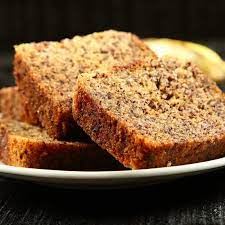

Sweet Banana cake

Ingredients
- 125g butter
- 3/4 cup caster sugar
- 1 tsp vanilla essence
- 1 cup of chia seeds
- 2 bananas mashed ripe
- 1 1/2 cups self-raising flour
- 1/4 cup plant-based milk
Steps
- Melt the butter, sugar and vanilla in a medium-sized saucepan.
- Remove from the heat.
- Add mashed bananas and stir through until just combined.
- Add egg and mix well. Stir in the flour, then pour in the milk and fold in lightly.
- Bake at 170C for approximately 40 minutes.